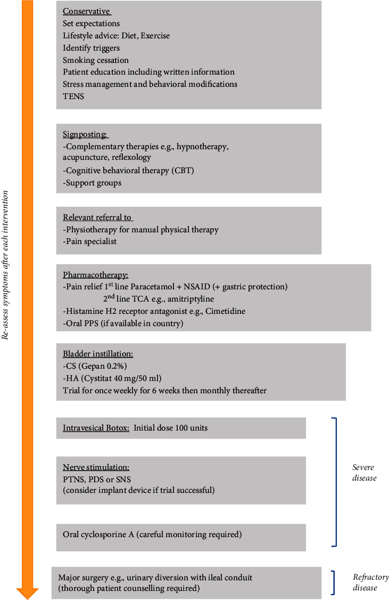

Página 10 · Fecho · Dois clássicos
O que realmente cai: o clássico das duas
Dois temas que caem pouco — mas, quando caem, caem sempre do mesmo jeito. Sem consultar: qual é o clássico de cada um?
O clássico da fístula
O cenário é sempre o mesmo: fístula vesicovaginal pequena, de baixo débito, tratada inicialmente com cateterismo vesical por três a quatro semanas e observação do fechamento espontâneo. E, quando o enunciado quer testar diagnóstico em vez de conduta, ele descreve o teste do corante e pede a leitura: corou é bexiga, não corou é ureter. Duas frases resolvem a imensa maioria das questões de fístula — uma de conduta, uma de diagnóstico. O resto do que foi construído até aqui existe para que essas duas frases não sejam decoradas no vazio: o cateterismo funciona porque reduz o débito dentro da janela biológica de quatro semanas, e o tampão decide porque o corante só chega à vagina se passar pela bexiga.
O clássico da bexiga dolorosa
A paciente em que, por exclusão, se chegou ao diagnóstico, com a dor característica ao enchimento vesical que melhora ao esvaziamento. É esse o retrato — e ele contém, em uma frase, a definição e a natureza do diagnóstico. E o desfecho clássico: essa paciente muitas vezes melhora com as medidas conservadoras associadas à fisioterapia pélvica e à amitriptilina — sem esquecer o suporte psicológico, tão importante para as pacientes com dor pélvica crônica. Repare que o desfecho mais comum vive nos dois primeiros degraus da escada, e que a droga que fecha o quadro é justamente a de melhor lastro de evidência. A escada inteira existe, mas a maioria das pacientes não sobe muito.
O que a diretriz manda não fazer
Existe um bloco de proscrições que raramente é estudado e que a banca adora, porque permite a pergunta invertida — "qual das condutas abaixo NÃO deve ser oferecida?". São quatro. Antibiótico oral de longo prazo não deve ser oferecido — a infecção já foi excluída na primeira camada da investigação, e manter antibiótico crônico só produz resistência e efeitos adversos. BCG intravesical não deve ser oferecido fora de protocolo de pesquisa: o ensaio disponível mostrou benefício pequeno demais frente ao risco. Hidrodistensão de alta pressão e longa duração não deve ser oferecida — é a proscrição que dá sentido ao número seguro de ~80 cmH₂O por 1-2 minutos, e a razão são rotura vesical e sepse. E corticoide oral de longo prazo não deve ser oferecido, pelo perfil de toxicidade cumulativa sem benefício sustentado. Guardar essas quatro linhas custa pouco e responde uma família inteira de questões.
O colecionador de armadilhas
Vale percorrer, de uma vez, tudo o que pode derrubar quem estudou por cima: o nome preferido pela ESSIC é síndrome da bexiga dolorosa, não cistite intersticial ; fístula não é incontinência — a perda é contínua, e o diferencial é obrigatório ↗A7; convencional → vesicovaginal / radical → ureterovaginal, mas não é regra ; corou = bexiga, não corou = ureter ; o alerta do pós-radioterapia, com fístula estreando meses a anos depois ; glomerulações e úlcera de Hunner aparecem na doença grave — e não pesam igual, uma classifica e a outra decide conduta; resíduo miccional e urodinâmica não são rotineiros ↗A7; e urgência com dor que alivia ao urinar ≠ urgência sem dor ↗A7 — o motivo da micção é o discriminador. Acrescente a essa lista o par farmacológico que a banca mais inverte: amitriptilina = H1 · cimetidina = H2.
E o fecho honesto: a imensa maioria das questões — e, ainda assim, são muito poucas — cobra exatamente isso. Vale saber quanto pesa cada tema tanto quanto saber o conteúdo dele. Dois assuntos periféricos, dois clássicos, e uma lista curta de armadilhas: é esse o tamanho real do que precisa ser levado daqui.
Pequena e de baixo débito
Cateterismo 3–4 semanas e observação do fechamento espontâneo.
Dor que muda com o volume
Diagnóstico por exclusão → conservador + fisioterapia manual + amitriptilina + suporte psicológico.
| Par | O que a banca faz | O que é certo |
|---|---|---|
| Nome preferido | “cistite intersticial” | síndrome da bexiga dolorosa, preferência ESSIC |
| Fístula × incontinência | trata perda contínua como incontinência | fístula perde continuamente e exige localização |
| Convencional × radical | transforma a heurística em regra | convencional→vesicovaginal / radical→ureterovaginal é tendência |
| Corou × não corou | inverte a origem | corou = bexiga; não corou = provável ureter |
| Pós-radioterapia | descarta pelo intervalo longo | pode estrear meses a anos depois |
| Glomerulação × Hunner | dá o mesmo peso | glomerulação classifica; Hunner define subtipo e muda conduta |
| Resíduo/urodinâmica | torna obrigatórios | não são rotineiros; entram caso a caso |
| Urgência | usa o sintoma como divisor | o motivo da micção separa dor de medo da perda |
| H1 × H2 | inverte os receptores | amitriptilina = H1 · cimetidina = H2 |

Fluxograma publicado organiza o tratamento da SBD desde medidas conservadoras e terapia manual até instilações, neuromodulação e cirurgia maior nos casos refratários.
A leitura começa no topo, com educação, dieta, exercício, cessação do tabagismo, manejo do estresse e modificação comportamental. A seguir aparecem suporte psicológico, fisioterapia manual, amitriptilina, cimetidina e PPS condicionado à disponibilidade local. A metade inferior mostra a progressão para instilações vesicais, toxina botulínica, neuromodulação, ciclosporina e, somente na doença refratária, cirurgia maior.
Não é algoritmo de bexiga hiperativa: aqui o eixo clínico é a dor vesical, com fisioterapia de relaxamento, antidepressivo tricíclico e terapias intravesicais. Na bexiga hiperativa predominariam antimuscarínicos/agonistas β3 e o motivo da micção seria evitar perda; na SBD, urinar busca aliviar a dor.
A figura não imprime as proscrições dentro do JPEG. O card autoral mantém as quatro proscrições e a figura funciona como conferência externa da escada, sem alegar que os quatro itens aparecem nela.
Juliebø-Jones P et al. Management of Bladder Pain Syndrome (BPS): A Practical Guide. Advances in Urology. 2022; Article ID 7149467, Figura 2. CC BY 4.0. DOI 10.1155/2022/7149467. Crop: nenhum; figura original preservada em inglês. Acesso em 28/07/2026.
Quiz — fixação
Mulher de 44 anos, diagnóstico de síndrome da bexiga dolorosa firmado por exclusão há 6 meses. Iniciou medidas conservadoras e fisioterapia pélvica, com melhora parcial. A conduta farmacológica de melhor lastro para associar neste momento é:
- Gabarito B. A amitriptilina é a droga oral com melhor lastro de evidência da escada — melhora clinicamente significativa em cerca de 63% contra 4% do placebo em ensaio controlado — e é ela que fecha o desfecho clássico junto com conservador, fisioterapia e suporte psicológico; a titulação (10-25 mg → 50 mg à noite) existe porque quase todas as pacientes têm efeitos anticolinérgicos.
- (A) e
- (C) são proscrições explícitas de diretriz: antibiótico oral de longo prazo e corticoide oral de longo prazo não devem ser oferecidos — no primeiro caso porque a infecção já foi excluída, no segundo pela toxicidade sem benefício sustentado.
- (D) também é proscrito fora de pesquisa, por benefício pequeno demais frente ao risco.
- Por que cair na (A): o quadro urinário arrastado sugere "infecção que não passa", e o reflexo é prolongar antibiótico — exatamente o que a urina estéril da investigação já descartou.
Assinale a alternativa que descreve corretamente um par frequentemente invertido em questões sobre estes dois temas:
- Gabarito C. É o par correto, e é justamente o mais invertido: cimetidina = H2 (protótipo da classe) e amitriptilina = H1 (além de anticolinérgica e inibidora de recaptação) — as duas convergindo na estabilização do mastócito.
- (A) inverte a leitura do teste: corou = vesicovaginal (certeza); molhou sem corar = provável ureterovaginal.
- (B) inverte os pesos endoscópicos: a glomerulação é a inespecífica (aparece em assintomáticas), e a úlcera de Hunner é a que define subtipo e muda conduta.
- (D) inverte a etiologia: a causa nº 1 de fístula vesicovaginal é a histerectomia convencional; a radical é a que se associa mais à ureterovaginal — e, ainda assim, como tendência, não como regra.
- Por que cair na (B): "glomerulação" soa como termo raro e específico, e o candidato assume que o achado exótico é o que fecha diagnóstico — quando o que decide tem nome próprio e correlação clínica estabelecida.
Sobre condutas que não devem ser oferecidas na síndrome da bexiga dolorosa:
- Gabarito A. É proscrição explícita: alta pressão (> 80-100 cmH₂O) e longa duração (> 10 min) associam-se a rotura vesical e sepse sem ganho consistente — e é essa proibição que dá sentido ao parâmetro seguro de ~80 cmH₂O por 1-2 minutos.
- (B) é o oposto: a terapia manual é a recomendação de maior força de toda a diretriz do tema (o que se evita é o fortalecimento).
- (C) é conduta de terceira linha plenamente indicada, e com racional mecanístico — a heparina é análogo de glicosaminoglicanas e repõe a camada defeituosa.
- (D) é parte do tratamento em dor pélvica crônica, não acessório.
- Por que cair na (B): a página ensina que "fisioterapia de fortalecimento deve ser evitada", e a memória guarda só "fisioterapia — evitar", apagando o adjetivo que carrega toda a distinção; é o tipo de compressão que a banca explora com uma alternativa quase idêntica à correta.
Revisão ativa
- Sem consultar: qual é o cenário clássico de cada uma das duas entidades, e qual conduta cada um pede?
- Das quatro proscrições, qual delas explica um número que você já tinha guardado em outra página — e por quê?
- Escolha três armadilhas do colecionador e reescreva cada uma como uma alternativa falsa de prova. Se conseguir formular a alternativa errada, você entendeu a certa.